Part 2
Side impact sensor
The purpose of the side impact sensor includes early impact detection and providing information to the control module. The sensor contains an acceleration sensor and a communication circuit. This sends digital information containing status messages for diagnostics and acceleration values in 120 levels to the control module via wiring. Calculations and decisions regarding detonation occur in the control module. The control module increases the level of sensitivity and measures more precisely.
4D, 5D
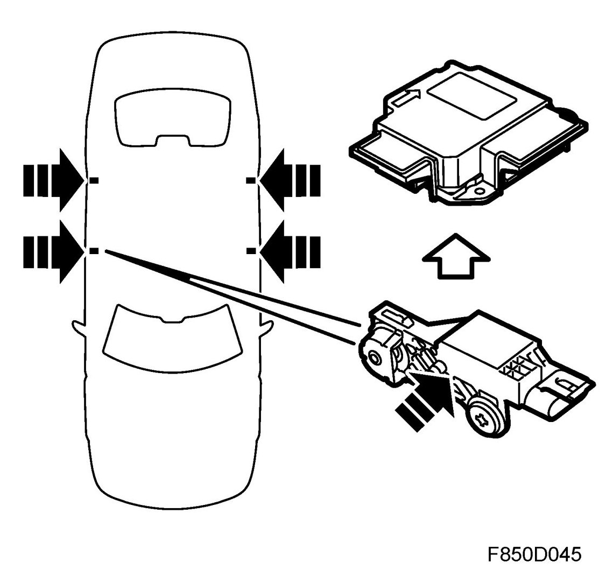
CV
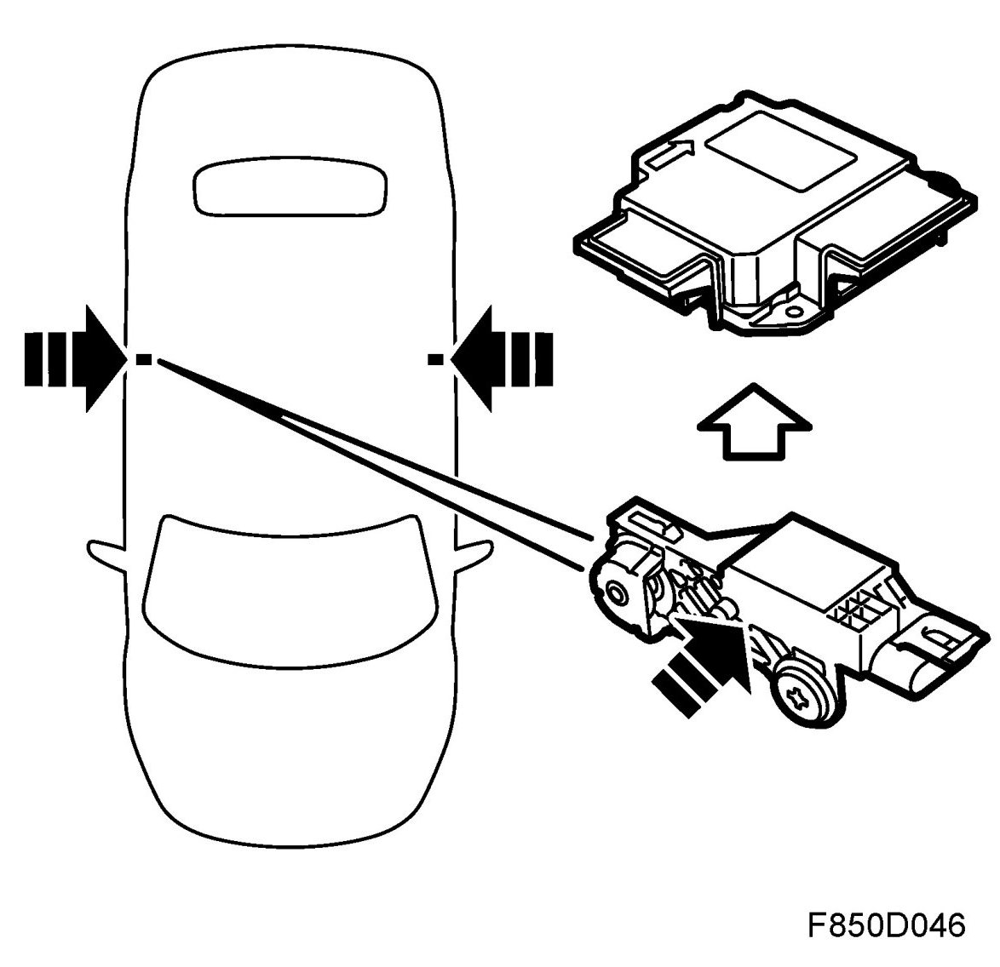
All side impact sensors are identical and yellow in colour.
4D: The car is fitted with four side impact sensors.
CV: The car is fitted with two side impact sensors. Belt tensioners
Belt tensioners
4D, 5D
The car is equipped with belt tensioners on the driver and front passenger seats. The seat belt tensioner pyrotechnic charges are built into the belt tensioner housing. Silicone is used as a sealant in order to reduce gas emissions arising from the activation of the pyrotechnical charges. The belt tensioners are mounted in the lower part of the B-pillars and the sills.
Function
The belt tensioner pulls the belt taut during the event of a collision, reducing forward movement of the driver or passenger. Additionally, force limiters release the belt according to a controlled sequence.
The seat belt tensioner consists of a pyrotechnic charge that is activated by the airbag control module together with the airbags. The seat belt tensioners can also be activated separately with a minor head-on collision.
The belt tensioners are compact type. When the belt tensioners are activated, the airbag control module sends a B+ voltage. An electric detonator (1) ignites a pyrotechnical charge (2), which generates a gas pressure that expands in the belt tensioner housing (3).
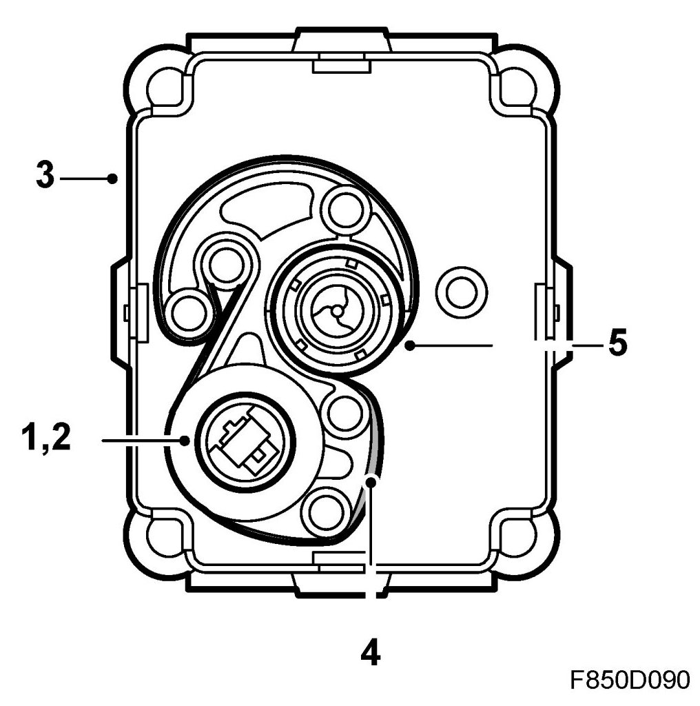
The gas passes into a chamber (4) that moves a steel band (5), which takes with it the belt strap. The belt is pulled taut, pulling back the passenger. The belt is contained using a power limiting torsion part of the inertia reel and the body is held in check as gently as possible.
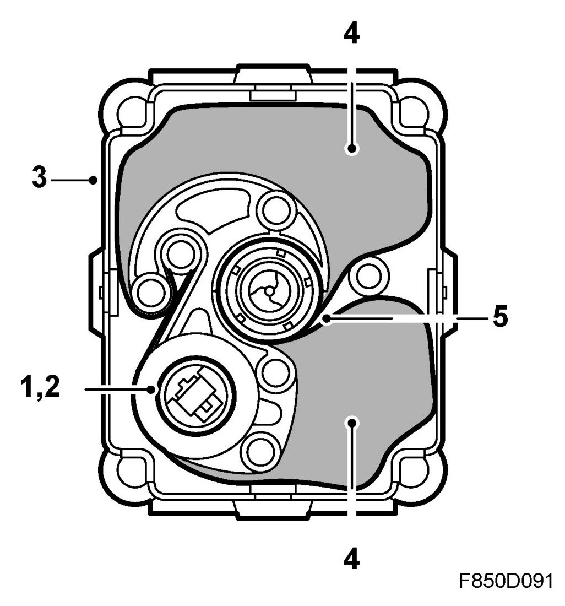
CV
The car is equipped with belt tensioners for the driver and front seat passenger as well as outer rear seats. The front belt tensioners are integrated in the seat and mounted in the lower section of the seat for the driver and passenger. The rear belt tensioners are mounted behind the backrest on the rear seats.
Function
The belt tensioner pulls the belt taut during the event of a collision, reducing forward movement of the driver or passenger. Additionally, force limiters release the belt according to a controlled sequence.
The seat belt tensioner consists of a pyrotechnic charge that is activated by the airbag control module together with the airbags. The seat belt tensioners can also be activated separately in a minor head-on collision. The belt tensioners are compact type. When the belt tensioners are activated, the airbag control module sends a B+ voltage. An electric detonator (1) ignites a pyrotechnical charge (2), which generates a gas pressure that expands in the belt tensioner housing (3).
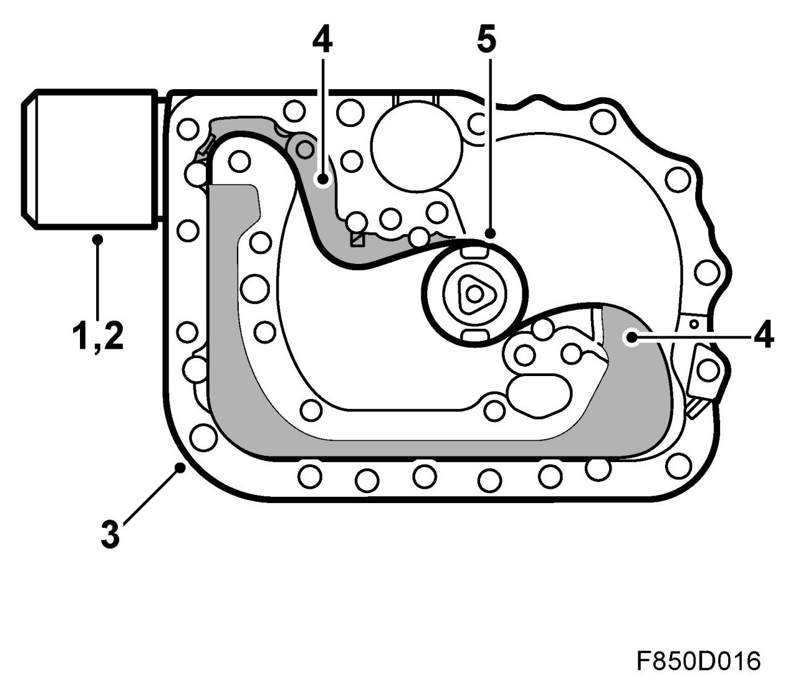
The gas flow is distributed into two chambers (4) which move a steel band (5) which tightens the seat-belt. The belt is pulled taut and takes up the slack in the belt while restraining the passenger. The belt is taken up aided by a force-limiting torsion unit in the belt roller which restrains bodily movement as gently as possible.
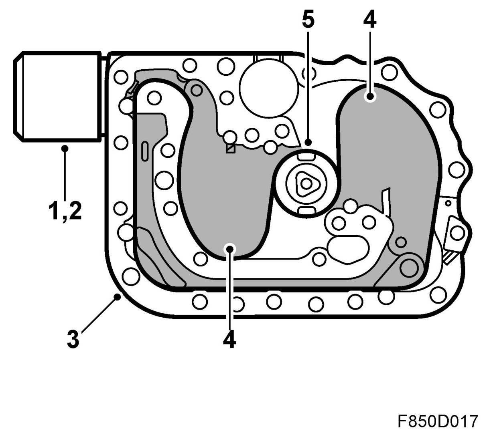
Seat position sensor
The car is equipped with a seat position sensor on the driver's side. In some markets, the sensor is also found on the passenger side. The seat position sensor is used to detect whether the seat is in a forward position, i.e. less than 30% from the frontmost position of the seat. It is also used to detect whether the seat is in a rear position, i.e. more than 30% from the frontmost position of the seat.
When the control module receives information from the seat position sensor, the control module determines how the detonation circuits should be activated. See control module information. Seat position sensors are mounted on both manual and electric seats.
Cables are used for power supply and communication between the seat position sensor and the control module. The sensor provides the control module with a constant current. The level of amperage is dependent on whether or not the sensor is affected.
- Forward position, < 30% 2-7 mA
- Rear position, > 30% 12-18 mA
The seat position sensor consists of a magnetic strip (2) which is mounted on the section of the seat rail fixed to the floor. A Hall sensor (1) is mounted on the moveable upper seat rail. When the seat is between the forward position and 30% towards the rear, the Hall sensor is not affected by the magnetic strip. The control module provides the Hall sensor with constant voltage and measures once every 100 ms while simultaneously measuring which current is passing through the sensor. The current through the Hall sensor is dependent on the magnetic field which affects the sensor.
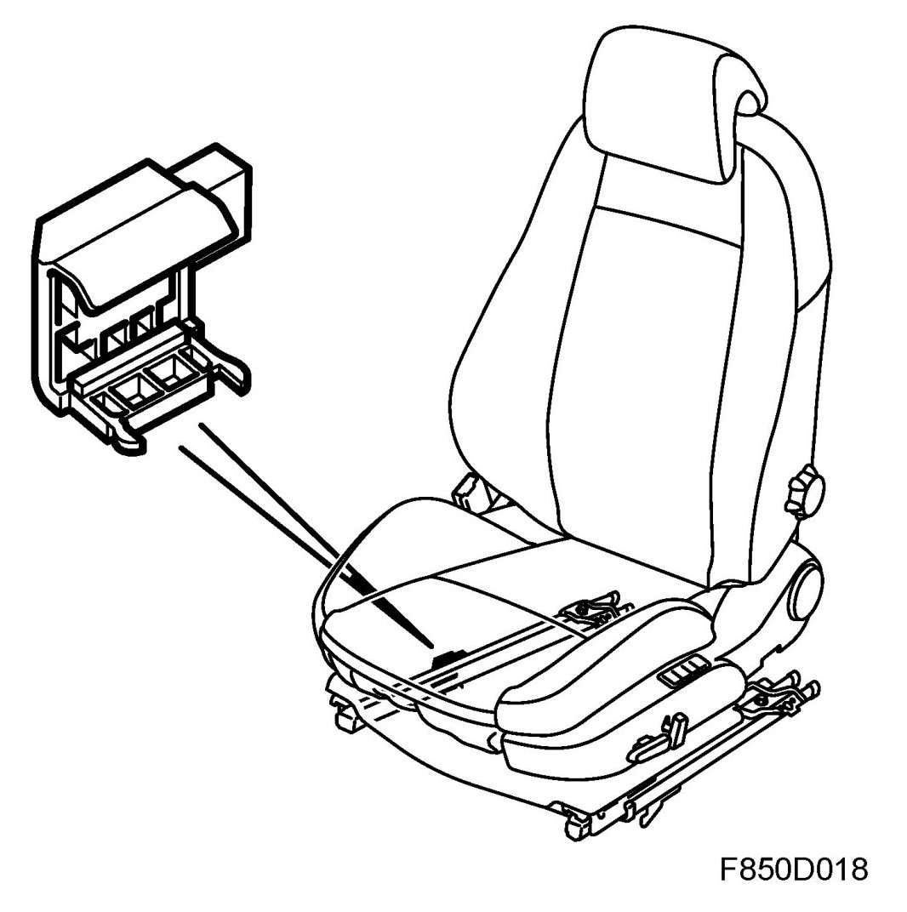
Seat-belt buckle
The sensor detects if the seat-belt buckle is fastened or unfastened. Using information from the seat-belt buckle sensors and seat position sensors, the airbag control module determines if the belt tensioner detonation circuits should be activated. The front belt tensioners can be activated individually while the tensioners for the outer rear seat passengers are always activated simultaneously with at least one of the front belt tensioners.
The seat-belt buckle sensors consist of a Hall sensor (1) containing a circuit board and a magnet (2) which is mounted in front of the Hall sensor on the belt mechanism. The sensor detects the magnetic field generated by the fixed magnet.
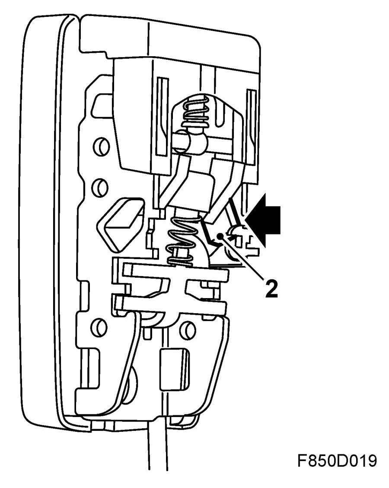
When the belt tongue (3) is not inside the buckle, the magnet (2) lies near the sensor. When the tongue is fastened, the magnet (2) is moved from the Hall sensor and the magnetic field is altered.
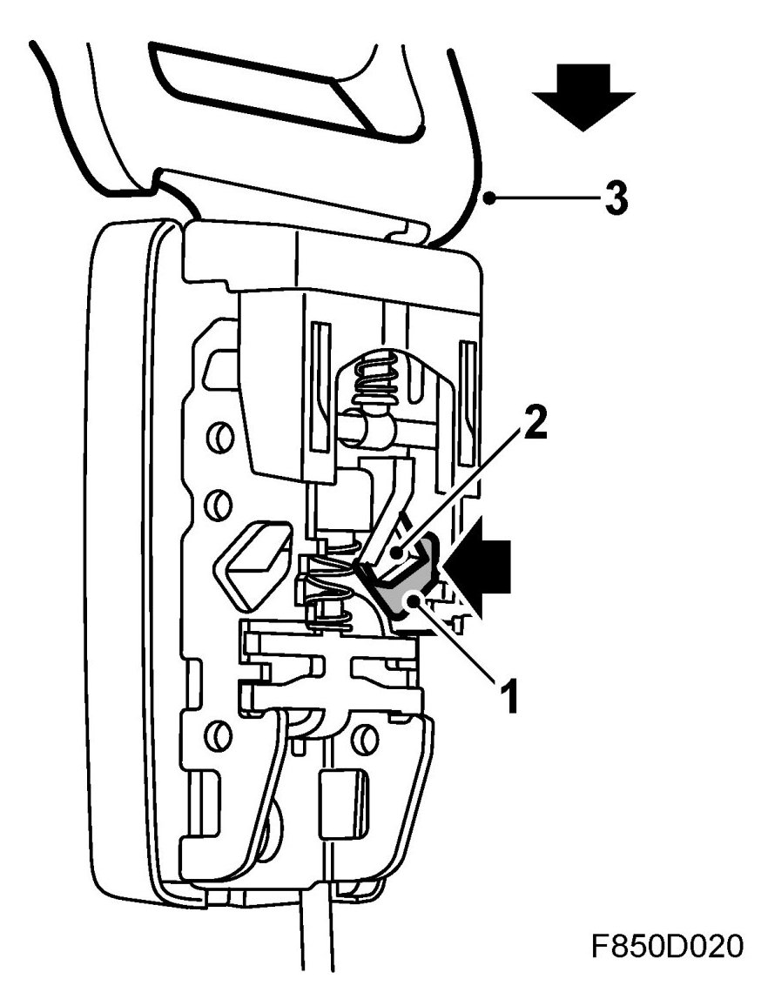
- Unfastened: 2.0-7.0 mA
- Fastened: 12.0-18.0 mA
The airbag control module provides voltage to the Hall sensor every 100 ms while simultaneously measuring the amount of current passing through the sensor. The current passing through the Hall sensor is dependent on the magnetic field that affects the sensor. The airbag control module sends out a bus message and the BCM uses this information in order to switch on the seat-belt warning.
Roll bar unit
Overview
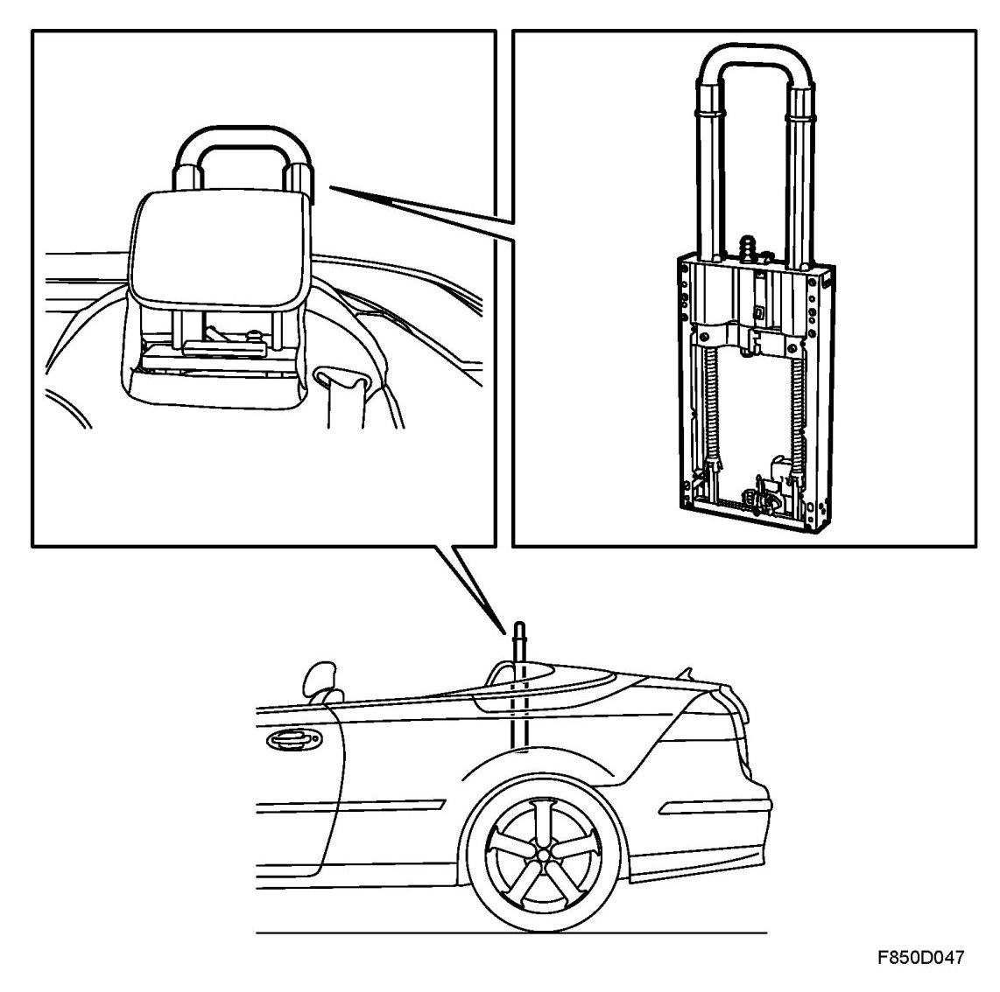
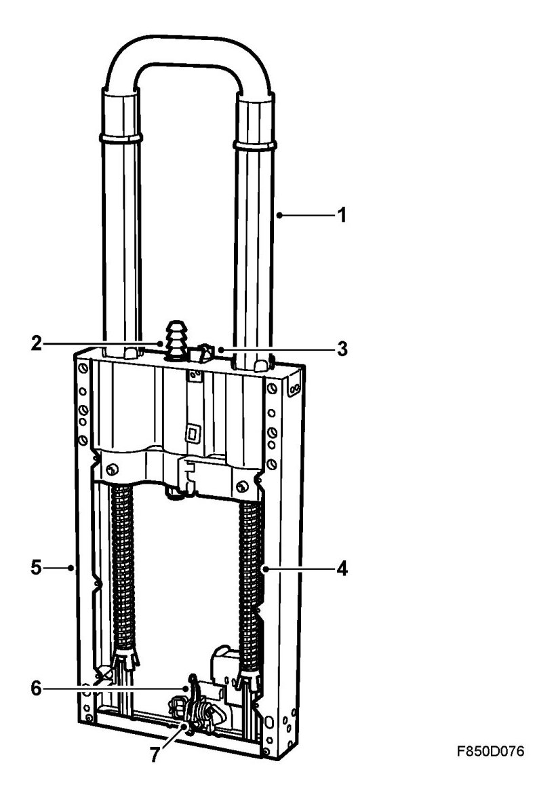
1. Roll bar unit
2. Lock bolt
3. Upper lock hook
4. Spring
5. Cassette
6. Lower lock hook
7. Activation unit, roll bar (734D/P)
General
To improve safety in the event of a rollover accident, the car is fitted with roll bars which are activated by the car airbag control module (ACM). In a rollover accident, two roll bars are extended from behind the rear seat backrest to protect the passengers. The roll bars are part of the vehicle's passive safety equipment. The protection system with bows consists of two cassettes mounted behind the rear seat.
Equipment
The roll bar unit cassette (5) is bolted to the body. The lower catch (6) locks the roll bar in its lowered position. The upper catch with release mechanism (3) locks the roll bar lock bolt (2) in raised position at the same time as releasing the return of the roll bar. In lowered position, the system is held against two pretensioned springs (4) and held with a lock integrated in the pyrotechnical activation unit (7).
Checking and activation
The system is activated by the airbag control module ACM which contains an angle sensor to measure whether the car is rolling. The roll bars are activated by the ACM and extended immediately. The customer cannot activate the bow himself. On automatic trigger controlled by the angle sensor in the airbag control module (ACM), the pyrotechnic activation unit (7) is detonated and releases the lower lock hook (6) which holds the bow down in a pretensioned position, and the lock is opened. Under spring force the roll bar is extended within 225 ms and locked in the upper position by means of the upper lock hook (3) and locking bolt (2).
The roll bar (1) can also be triggered manually by turning the axle of the lower lock hook (6). To be able to do this, the front luggage compartment trim and both roll bar covers must be removed.
WARNING: Make sure there are no objects or persons obstructing the motion of the roll-over bars when they are activated. Uncontrolled projectiles can cause personal injury.
On manual activation of the roll bar, the upper lock hook (3) must first be pressed down before the roll bar can be returned to the down position. The lower lock hook (6) locks the bow in its down position.
Retracted position, the lower lock hook locks the bow.
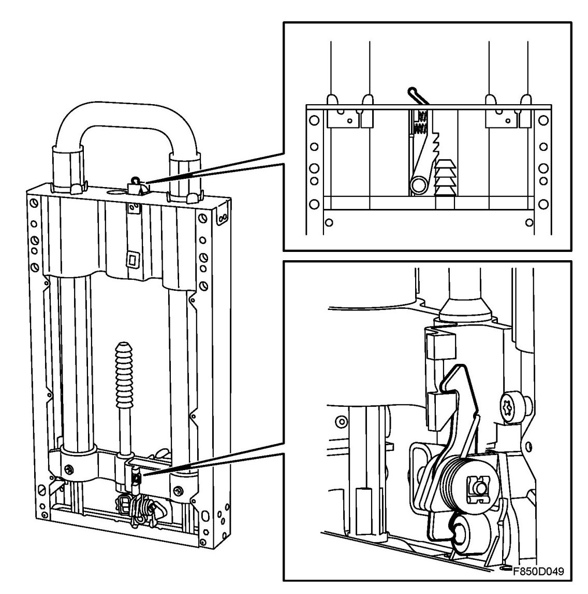
Extended position, the upper lock hook locks the roll bar.
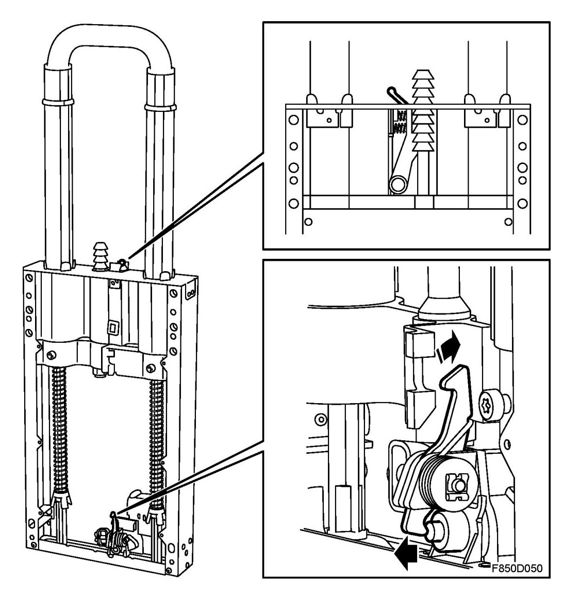
Activated airbag
When the ACM control module has deployed an airbag then the bus message "Airbag activated ON" is sent by the ACM.
The BCM uses this to activate the interior lighting, send the bus message to switch on dipped beam, activate the hazard flashers and unlock all the doors.
Airbag warning lamp
When the ignition key is turned to the start or drive position, the airbag warning lamp on the main instrument unit MIU lights for 3-4 seconds and then goes out if no active fault codes are stored. For normal function, the airbag control module sends a bus message "Airbag indication - Off" on the I-bus.
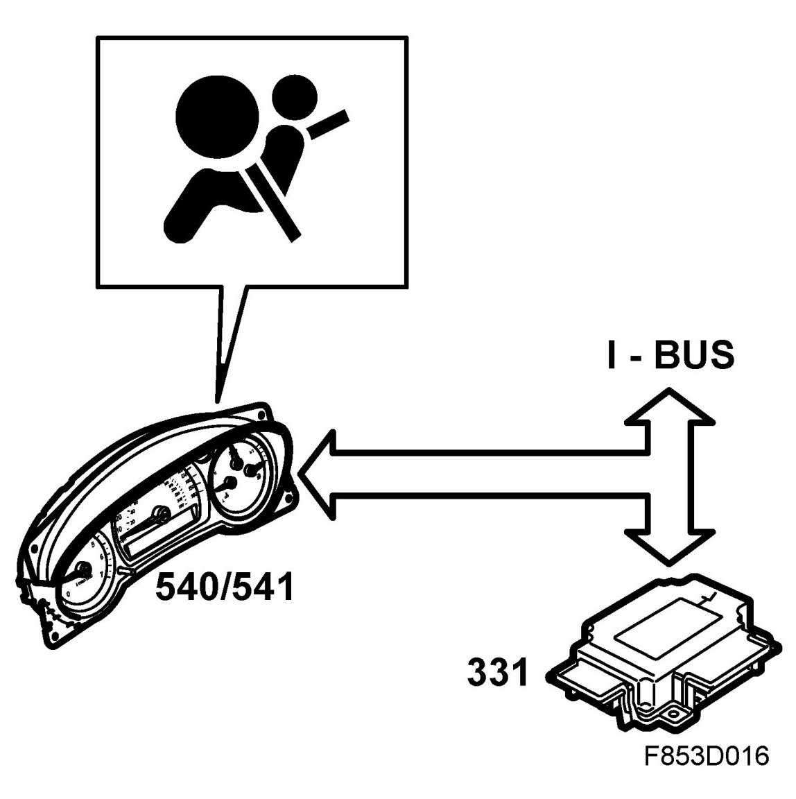
If any active diagnostic trouble codes are stored, the lamp in the MIU will light for 4 seconds and extinguish for one and a half seconds; whereupon it will light again and remain lit until the ignition is switched off or the DTC is erased.
An error in the airbag system is indicated by a continuous glow of the airbag warning lamp in the main instrument panel (MIU) as well as a check message with symbol which is activated in SID (Saab Information Display).
On a fault in the airbag system, the airbag control module sends a bus message "Airbag indication - On" via the I-bus. When this message is sent, the MIU lights the airbag warning lamp and SID activates a check message.
SID shows the airbag warning text "Airbag malfunction. Contact service." together with a symbol:
If an airbag or seat-belt tensioner has been triggered, the airbag warning lamp will remain lit continuously.
Message
An airbag system fault will result in a warning message and symbol displayed in SID.
Contact roller
In order to conduct test and detonation current to the driver airbag, a contact roller is located between the steering wheel and the steering column assembly. The contact roller is mounted and integrated in the CIM (Column Integrated Module), which means that it is not available as a separate spare part. The contact roller also conducts current for the horn, audio system, telephone and speak button.
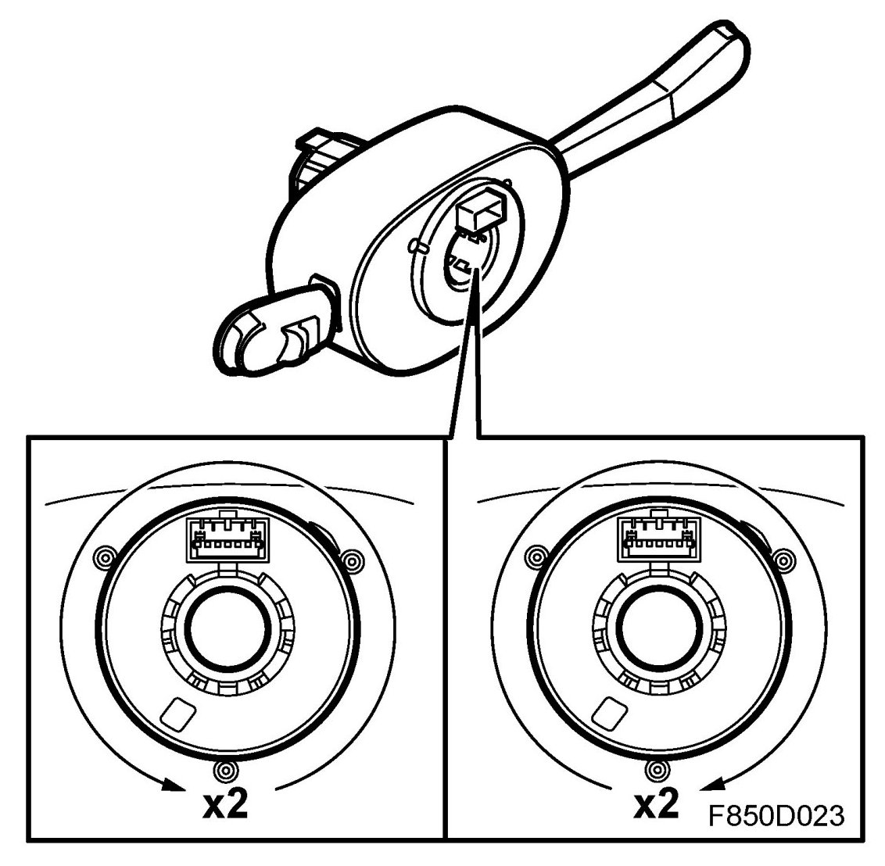
The contact roller consists of one fixed and one moving part. A spiral plastic tape with eight embedded leads is fitted between the fixed and moving part. The contact roller forms a connection between a circuit board in the CIM and the steering wheel. Four of the leads are connected to the driver airbag.
The moving part of the contact roller can be rotated approximately 4 revolutions, in other words, approximately 2 turns in either direction from the centre position. If over-rotation occurs, the spiral tape will break and the SRS system will no longer function. This break is detected by the control module and the airbag warning lamp will switch on.